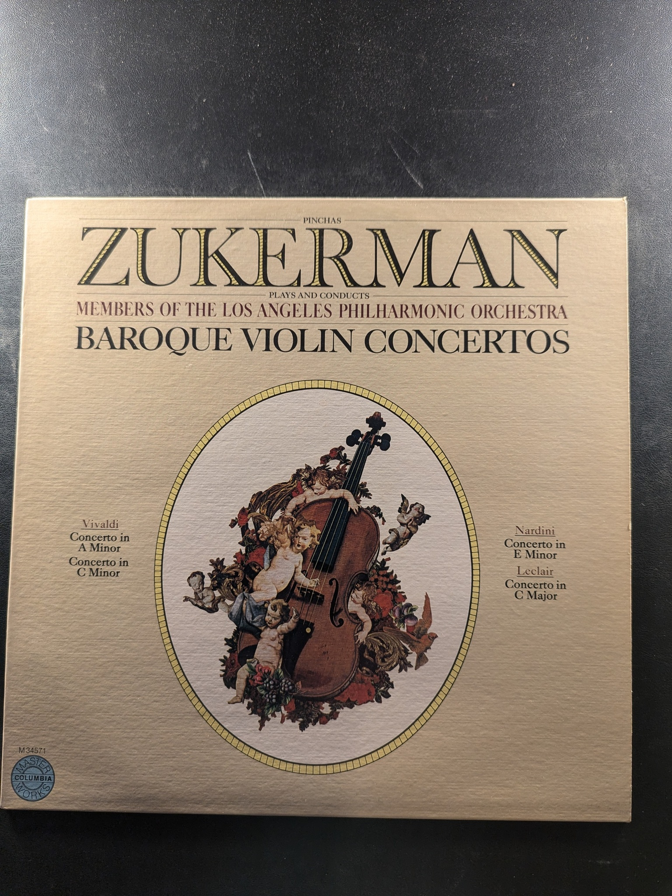
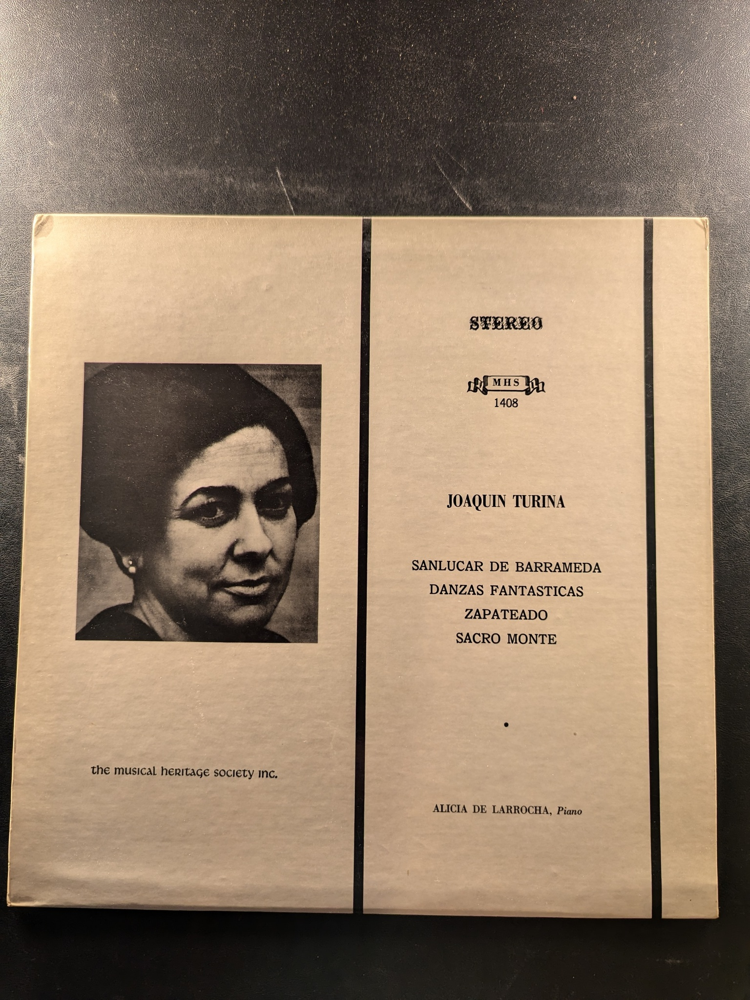
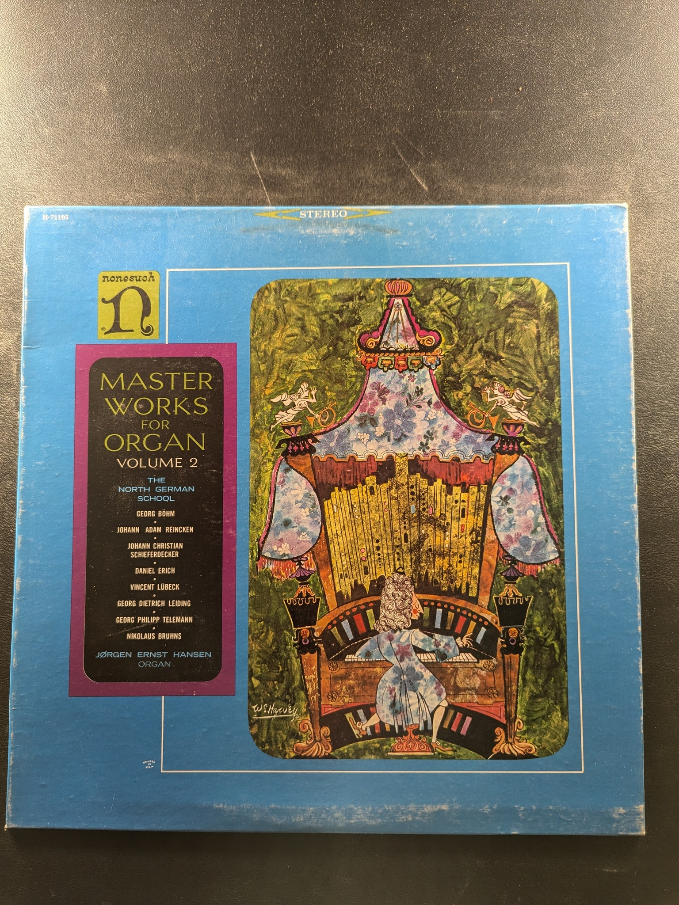

Sonata, Op. 8 / Suite en Concert
Zoltan Kodaly / André Jolivet
Musical Heritage Society MHS 1030
Prélude à l'après-midi d'un faune / Boléro / L'apprenti sorcier / España
Wiener Symphoniker, Eduard van Remoortel
Yorkshire Records STPL 511.850
Mendelssohn Symphony No. 4 in A 'Italian' / Schumann Symphony No. 4 in D minor
Klaus Tennstedt, Berlin Philharmonic
EMI Digital DS-37360
Baroque Violin Concertos
Pinchas Zukerman
Columbia Masterworks M 34571
Concerto for Two Pianos and Orchestra / Sonata for Two Pianos
Francis Poulenc
MHS MHS 3576
Scriabin: The Poem of Ecstasy / Rachmaninoff: The Isle of the Dead
Yevgeny Svetlanov, U.S.S.R. Symphony Orchestra
Melodiya R-40019
Nocturnes
John Field
Nonesuch H-71185
Fantasy in C Minor, K. 475 / Piano Sonata in C Minor, K. 457 / Andante in F Major, K. 616
Wolfgang Amadeus Mozart
The Musical Heritage Society Inc. MHS 1700
Sanlucar de Barrameda / Danzas Fantasticas / Zapateado / Sacro Monte
Joaquin Turina
the musical heritage society inc. MHS 1408
Twelve Spanish Dances for Piano
Enrique Granados
Musical Heritage Society MHS 1518
Piano Rags by Scott Joplin
Joshua Rifkin
Nonesuch H-71248
Master Works for Organ Volume 2: The North German School
Jørgen Ernst Hansen
Nonesuch H-71168
Master Works for Organ Volume 4
François Couperin, Louis Couperin
Nonesuch H-1150
Organ Music
Johann Pachelbel
Musical Heritage Society MHS 3532
Sweet Sixteenths: A Ragtime Concert
William Albright
MHS 4378
Readings from 'Canterbury Tales'
Victor L. Kaplan
Folkways Records FL 9859
Cantata BWV 91 & Cantata BWV 122
Johann Sebastian Bach
Musical Heritage Society MHS 1671

Israel in Egypt
Georg Friedrich Händel
Archiv Produktion 2708 020
Cantata No. 19 "Es erhub sich ein Streit" / Cantata No. 191 "Gloria in excelsis Deo"
Johann Sebastian Bach
The Musical Heritage Society Inc. MHS 1401
Cantata No. 153 & Cantata No. 161
Johann Sebastian Bach
Musical Heritage Society MHS 3379
Der Streit Zwischen Phoebus und Pan
Johann Sebastian Bach
MHS 3587
Cantata No. 88 "Siehe, ich will viel Fischer aussenden" / Cantata No. 150 "Nach dir, Herr, verlanget mich"
Johann Sebastian Bach
The Musical Heritage Society Inc. MHS 1315
Master Works for Organ Volume 6
Dietrich Buxtehude
Nonesuch H-71188
Cantata No. 29 & Cantata No. 135
Johann Sebastian Bach
Musical Heritage Society Inc. MHS 1417
Cantata No. 4: Christ lag in Todesbanden / Cantata No. 182: Himmelskönig sei willkommen
J.S. Bach
Vanguard Everyman Classics SRV-225 SD
{kind=link}
{kind=link}
{kind=link}
{kind=link}
{kind=link}
{kind=link}
{kind=link}
{kind=link}
{kind=link}
{kind=link}
{kind=link}
{kind=link}
{kind=link}
{kind=link}
{kind=link}
{kind=link}
{kind=link}
{kind=link}
{kind=link}
{kind=link}
{kind=link}
{kind=link}
{kind=link}
{kind=link}